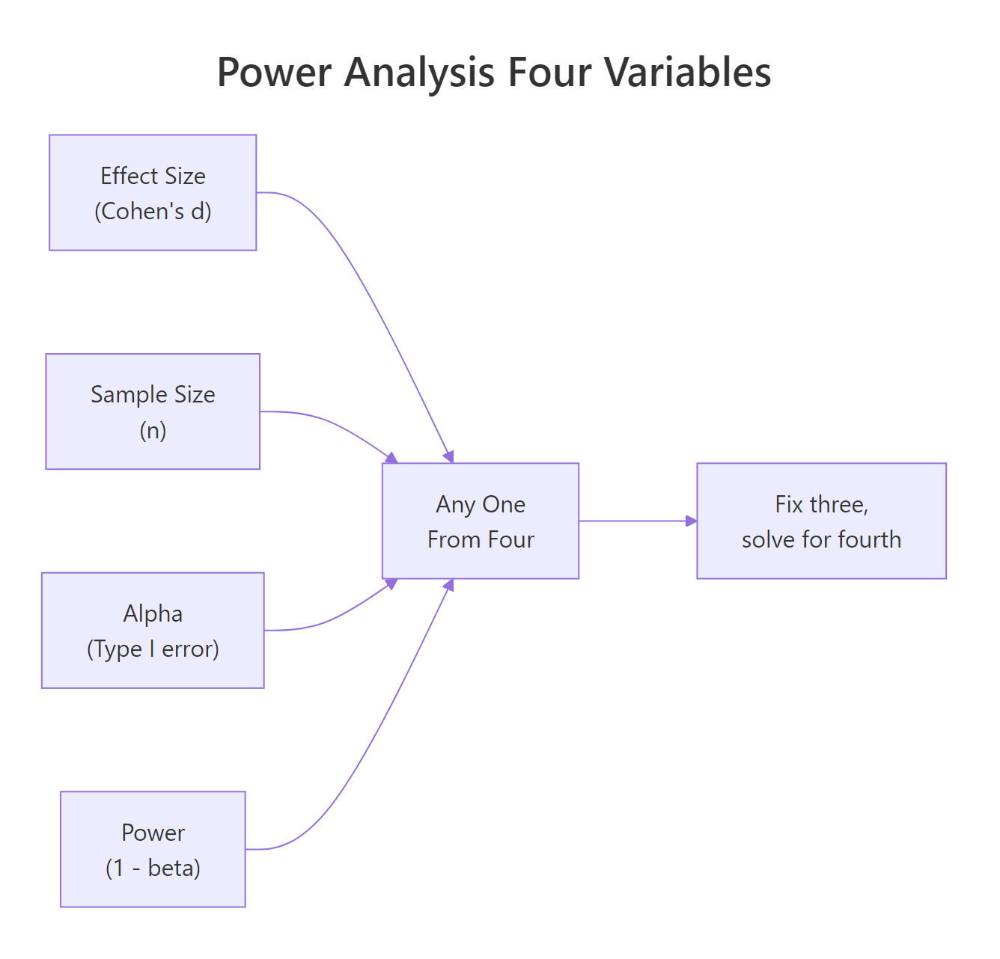
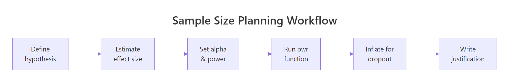

Sample Size in R: Calculate Your N Before You Collect a Single Observation
Sample size planning is calculating how many observations you need to reliably detect an effect of a given size, a decision made before collecting data, using the pwr package in R or simulation.
Introduction
Most studies don't fail because of bad analysis. They fail because of bad planning. A study with too few participants can't detect a real effect even when one exists, and you won't know until your results come back non-significant and it's too late to do anything about it. This is called an underpowered study, and it's one of the most common (and avoidable) problems in empirical research.
The good news is that the fix is simple: plan your sample size before you collect data. This process, called power analysis, takes the guesswork out of "how many participants do I need?" and replaces it with a principled calculation.
In this tutorial you'll learn how to use R's pwr package to calculate sample sizes for t-tests, proportions, ANOVA, and chi-squared tests. You'll also learn how to use simulation when pwr isn't flexible enough, and how to write the one-paragraph justification that grant reviewers and ethics boards actually want to see. All code runs interactively in your browser, no setup needed.
pwr package covers the most common test types. For mixed models, survival analysis, or complex repeated-measures designs, simulation (covered in Section 4) is your best tool. The pwrss package also extends coverage significantly.What Is Statistical Power and Why Does It Matter Before You Collect Data?
Before any calculation, you need to understand the four quantities that are always involved in a power analysis. They're not independent, fix any three and the fourth is determined.
- Effect size, how large the true difference is (e.g., Cohen's d for means, odds ratio for proportions)
- Sample size (n), the number of observations per group
- Alpha (α), the Type I error rate, usually 0.05 (your threshold for "statistically significant")
- Power (1 − β), the probability of detecting the effect if it truly exists; the convention is 0.80

Figure 1: The four interdependent quantities in power analysis. Fix any three and solve for the fourth.
Think of power as your study's sensitivity. A study with 80% power will detect a true effect 8 times out of 10. With 50% power, you're essentially flipping a coin. Most funding bodies and ethics boards expect at least 80% power; 90% is better for confirmatory trials.
Let's build intuition with a quick simulation. We'll generate data from two groups with a known difference, run a t-test, and count how often it's significant across 1,000 repetitions. That proportion is our empirical power.
With n = 50 per group and a medium effect size (d = 0.5), we get about 70% power, below the 80% threshold. That means roughly 30% of studies with this design would fail to detect a real effect. This is why you calculate N before you start, not after.
Try it: Change n_per_group to 64 in the code above. What empirical power do you get? Is it closer to 80%?
Click to reveal solution
Explanation: At n = 64 per group, a medium effect size (d = 0.5) yields approximately 80% power, right at the conventional threshold.
How Do You Calculate Sample Size for a t-Test in R?
The pwr package makes t-test sample size calculation a one-liner. The key function is pwr.t.test(). You provide three of the four quantities (effect size, n, alpha, power) and leave the fourth as NULL, that's the one R calculates.
The trickiest part is specifying the effect size. Cohen's d is the standardised mean difference: the expected difference between groups divided by the pooled standard deviation. Cohen proposed d = 0.2 as "small", 0.5 as "medium", and 0.8 as "large", but these are rough benchmarks. Always ground your effect size in prior literature or domain knowledge.

Figure 2: The six-step sample size planning workflow, from hypothesis to written justification.
The output tells you n = 63.77, always round up to the next whole number. The note at the bottom is critical: n is per group, not total. A study with two groups needs 128 participants, not 64.
Now compare a one-sample test (measuring against a known baseline) with a paired design (measuring the same people twice). Paired designs are far more efficient because within-person variation is removed.
A paired design needs only 34 participants total for the same power. If your study design allows repeated measurements on the same individuals, paired testing can halve your recruitment burden.
It's also useful to see how power changes as n increases. A power curve makes this visual and is useful for grant applications.
The curve shows how power rises steeply at small n and flattens out. Beyond n = 100 per group, each additional participant buys very little extra power for this effect size.
ceiling(64 / 0.85) gives 76 per group. Build this into your protocol from the start.Try it: Calculate the sample size needed for a two-sample t-test with a small effect (d = 0.2) and 90% power. Save the result to ex_n_small.
Click to reveal solution
Explanation: Small effects require very large samples. Detecting a d = 0.2 effect with 90% power needs over 500 participants per group, 1,054 total. This is why knowing your expected effect size before designing a study is so important.
How Do You Calculate Sample Size for Proportions, ANOVA, and Chi-Squared Tests?
Not every study compares means. pwr has dedicated functions for proportions (pwr.2p.test), ANOVA (pwr.anova.test), and chi-squared tests (pwr.chisq.test). Each uses a different effect size metric.
For proportions, Cohen's h is the effect size: ES.h(p1, p2) computes it from two proportions directly. For ANOVA, Cohen's f is used (f = 0.10 small, 0.25 medium, 0.40 large). For chi-squared, Cohen's w (w = 0.10 small, 0.30 medium, 0.50 large).
The chi-squared result (N = 1194) is a reminder that detecting small associations in contingency tables requires very large samples. If your study is testing a small frequency difference, plan accordingly.
Try it: A clinical study expects 40% of patients to respond to treatment A and 55% to treatment B. Calculate the sample size per group needed at 80% power.
Click to reveal solution
Explanation: ES.h() computes Cohen's h from the two proportions (h ≈ 0.302). pwr.2p.test() then finds the N per group needed to achieve 80% power with that effect size.
How Do You Use Simulation to Estimate Power for Complex Designs?
pwr covers standard tests, but what about mixed models, non-normal data, or designs with covariates? Simulation is the answer. The idea is simple: generate fake data from your assumed model, fit the model, check whether p < 0.05, and repeat thousands of times. The proportion of significant results is your estimated power.
Here's a simulation for a two-sample t-test with a slight twist, slightly skewed (non-normal) data from a gamma distribution:
The Wilcoxon test (a non-parametric alternative) yields about 62% power here, below 80%. You'd increase n_sim_per_group until the simulated power reaches your target.
replicate() for clean simulation loops. It's equivalent to a for loop but returns a vector directly, no need to pre-allocate and index. For very large simulations (10,000+), consider the future package for parallelisation.Try it: Modify the simulation above to test a larger effect shift of 1.0. What power do you get? Save it to ex_sim_power.
Click to reveal solution
Explanation: Doubling the effect shift from 0.5 to 1.0 pushes simulated power well above 90%. This shows the direct relationship: larger effects are easier to detect, requiring smaller samples.
How Do You Write a Defensible Sample Size Justification?
Calculating N is half the job. The other half is documenting it. Ethics boards, grant reviewers, and journal editors expect a brief but complete justification. It needs four elements:
- The effect size and its source, where does d = 0.5 come from?
- The alpha level, usually 0.05, sometimes 0.01
- The desired power, usually 80% or 90%
- The formula or function used, which R function, which test
Here's how to generate and format that justification directly from your pwr output:
That's your methods paragraph. Copy it directly into your ethics application or grant proposal.
Try it: Adapt the justification template above for a study comparing two proportions (40% vs 55% response rate, 15% dropout). Fill in ex_justification.
Click to reveal solution
Explanation: The template works for any test, swap the function, update the effect size description, and keep the rest of the structure.
Common Mistakes and How to Fix Them
Mistake 1: Treating pwr output as total N, not per-group N
❌ Wrong:
Why it's wrong: The NOTE: n is number in each group line in the output is easy to miss. Recruiting only 64 total gives you 32 per group and roughly 55% power, far below target.
✅ Correct:
Mistake 2: Using Cohen's benchmarks without domain justification
❌ Wrong: "We assumed a medium effect size (d = 0.5) following Cohen (1988)."
Why it's wrong: Cohen explicitly said his benchmarks should be a last resort. Reviewers will push back. "Medium" in psychology is not the same as "medium" in pharmacology.
✅ Correct: Ground your effect size in a pilot study, a meta-analysis, or the minimum clinically meaningful difference: "Based on Smith et al. (2022), who reported d = 0.48 in a similar population, we used d = 0.5."
Mistake 3: Forgetting dropout inflation
❌ Wrong:
✅ Correct:
Mistake 4: Post-hoc power analysis
❌ Wrong: Running pwr.t.test(n = 30, d = observed_d, ...) after seeing p = 0.12 to explain why the study wasn't significant.
Why it's wrong: Post-hoc power is mathematically equivalent to transforming your p-value, it adds no information and is rejected by most journals. Plan power prospectively.
Mistake 5: Ignoring multiple comparisons
❌ Wrong: Using alpha = 0.05 for a study with 5 primary endpoints.
✅ Correct: Apply a Bonferroni correction or use the family-wise error rate: alpha_adjusted <- 0.05 / 5 = 0.01 per test, then recalculate N with the adjusted alpha.
Practice Exercises
Exercise 1: Full Sample Size Pipeline
Your team is planning a study comparing mean systolic blood pressure between a treatment group and a control group. A prior study found a mean difference of 8 mmHg with a pooled SD of 15 mmHg. You expect 20% dropout and want 80% power.
- Calculate Cohen's d from the expected difference and SD
- Use
pwr.t.test()to find the required n per group - Inflate for dropout
- Print a justification sentence
Click to reveal solution
Explanation: Cohen's d = 8/15 ≈ 0.533. This falls between Cohen's medium (0.5) and large (0.8) benchmarks. After inflation, you need 72 participants per group, 144 total.
Exercise 2: Simulation for a Non-Standard Design
You're planning a study with three groups (control, low dose, high dose) where the outcome is highly skewed count data (Poisson distributed). The expected group means are 5, 7, and 10 counts respectively. Estimate the power of a Kruskal-Wallis test at n = 30 per group using simulation with 1,000 repetitions.
Click to reveal solution
Explanation: With means of 5, 7, and 10 (a fairly large effect in Poisson data), 30 per group gives ~95% power for the Kruskal-Wallis test. Simulation is the right tool here because pwr doesn't have a Poisson/Kruskal-Wallis function.
Putting It All Together
Let's walk through a realistic end-to-end scenario: a clinical trial comparing two dietary interventions on LDL cholesterol reduction.
The research team found a meta-analysis suggesting a mean difference of 10 mg/dL between the interventions, with a pooled SD of 18 mg/dL. The trial will run for 6 months with an expected 25% dropout. The primary analysis is a two-sample t-test at alpha = 0.05.
The final recruitment target is 142 participants, giving 53 completers per arm and 80% power, with a comfortable margin because the inflated sample actually provides ~89% power if dropout is lower than expected.
Summary
| Goal | Function | Key effect size | Notes |
|---|---|---|---|
| Two-sample t-test | pwr.t.test(type="two.sample") |
Cohen's d | n = per group |
| One-sample t-test | pwr.t.test(type="one.sample") |
Cohen's d | n = total |
| Paired t-test | pwr.t.test(type="paired") |
Cohen's d | n = pairs |
| Two proportions | pwr.2p.test() |
Cohen's h via ES.h() |
n = per group |
| One-way ANOVA | pwr.anova.test() |
Cohen's f | n = per group |
| Chi-squared | pwr.chisq.test() |
Cohen's w | N = total |
| Complex designs | replicate() simulation |
Domain-specific | Most flexible |
Key takeaways:
- Fix three of {effect size, n, alpha, power} and solve for the fourth
pwroutput is per group for multi-group tests, always multiply for total- Inflate calculated n for expected dropout before finalising
- Ground your effect size in prior literature, not just Cohen's benchmarks
- Simulation works for any design that
pwrdoesn't cover - Never run power analysis post-hoc to explain non-significant results
FAQ
What if I don't know the effect size?
You have three options: (1) run a small pilot study (n = 10-20 per group) and estimate d from the observed difference and SD; (2) use the minimum clinically/practically meaningful difference, the smallest effect that would change practice; (3) use Cohen's benchmarks as a last resort with explicit acknowledgment.
Can I run power analysis after data collection?
Only for planning a future study. Post-hoc power calculated from your own non-significant results is circular, it's just a transformation of your p-value and tells you nothing new. Journals reject this practice.
Should I target 80% or 90% power?
80% is the conventional minimum. Target 90% for confirmatory trials (Phase III clinical trials, pre-registered studies where a single null result is costly). The extra n is usually worth it for studies where false negatives have serious consequences.
How do I handle multiple primary endpoints?
Apply a Bonferroni correction: divide alpha by the number of primary endpoints before calculating N. This controls the family-wise error rate. For 5 endpoints at alpha = 0.05, each test uses alpha = 0.01, increasing required N substantially.
Is simulation more accurate than pwr?
For standard designs (t-test, ANOVA, proportions), pwr is exact and preferred. Simulation is more flexible but noisy, increase n_sims to 5,000+ for stable estimates. For complex designs with covariates or hierarchical data, simulation is the only option.
References
- Cohen, J., Statistical Power Analysis for the Behavioral Sciences, 2nd Edition. Lawrence Erlbaum (1988).
- Champely, S., pwr: Basic Functions for Power Analysis. CRAN. Link
- pwr package vignette, "pwr: Basic Functions for Power Analysis." Link
- Higgins, P., "Sample Size Calculations with {pwr}" in Reproducible Medical Research with R. Link
- Masur, P.K., "What is statistical power? And how to conduct power analysis in R?" (2024). Link
- Lakens, D., "Calculating and reporting effect sizes to facilitate cumulative science." Frontiers in Psychology, 4, 863 (2013).
- R Core Team, R: A Language and Environment for Statistical Computing. Link
Continue Learning
- Correlation Analysis in R, Pearson, Spearman, and visualising relationships before you commit to a sample size estimate.
- Data Quality Checking in R, Validate your data before analysis so your collected N counts.
- Statistical Tests in R, A decision guide for choosing the right test, the necessary complement to choosing the right N.